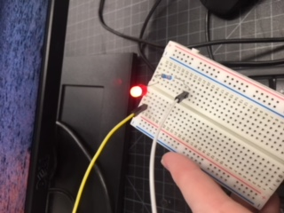

So after soldering came Arduino. But first, we had to learn how to properly place the wires and stuff.
I wasn't that quick with it, and we soon moved on to Arduino. I did manage to do a few things there. To be honest, though, I completely forget how they differ from the original.
Yeah... Coding isn't my strong suit.